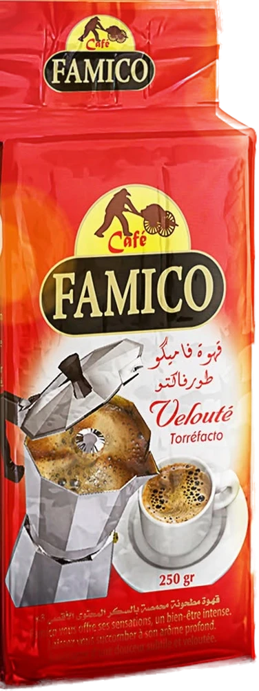
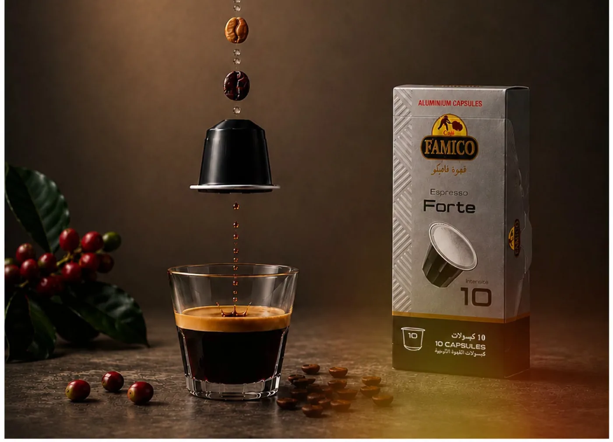

Ristretto, Intenso, Oro, Forte : choisissez votre goût
Nos quatre espressos en capsules aluminium, chacun avec son caractère.


Depuis notre unité de Douéra, Famico torréfie et conditionne le café de millions de tasses : le Velouté de la cafetière, l'espresso en capsule, le grand format des professionnels.
Chez Famico, le café n'est pas un simple produit. C'est le premier geste du matin, la tasse partagée de la qaâda, la pause du bureau et la veillée de Ramadan. Nous le torréfions avec soin pour qu'il ait le même goût dans chaque foyer algérien.
De la cafetière italienne familiale à la machine espresso du bureau, en passant par le comptoir du café de quartier.
Rond, intense et généreux en mousse : le paquet rouge que l'on retrouve dans les cuisines de tout le pays, de génération en génération.

Le Velouté Famico en seau refermable, pensé pour les professionnels qui servent des centaines de tasses par jour.
Des boîtes de 10 capsules aluminium, pour retrouver l'espresso Famico à la maison comme au bureau.



Court et serré, il concentre l'essentiel du café en quelques gorgées. Pour ceux qui aiment l'intensité sans détour.
Chaque paquet Famico suit le même chemin, contrôlé à chaque étape dans notre unité de la zone industrielle de Douéra.
Des lots de café vert choisis pour leur régularité et leur caractère.

Un profil généreux qui révèle le corps et les notes chocolatées.

Calibrée pour la cafetière italienne, l'espresso et le comptoir.

Paquet, seau ou capsule : un emballage pensé pour l'arôme.

Grossistes, supérettes, cafés-restaurants, hôtels et entreprises : rejoignez le réseau de distribution Famico partout en Algérie.
Nos quatre espressos en capsules aluminium, chacun avec son caractère.

Le café qui accompagne les soirées du mois sacré.

Un espresso, de la glace, du lait : le rafraîchissement signé Famico.